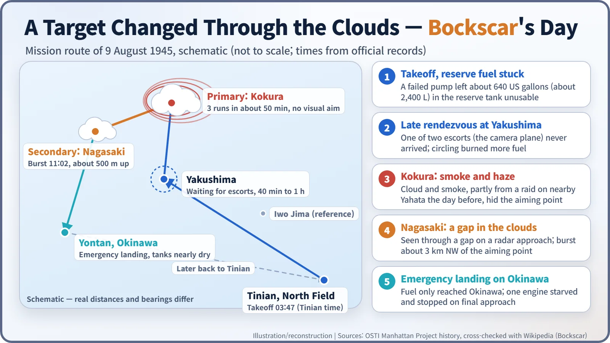
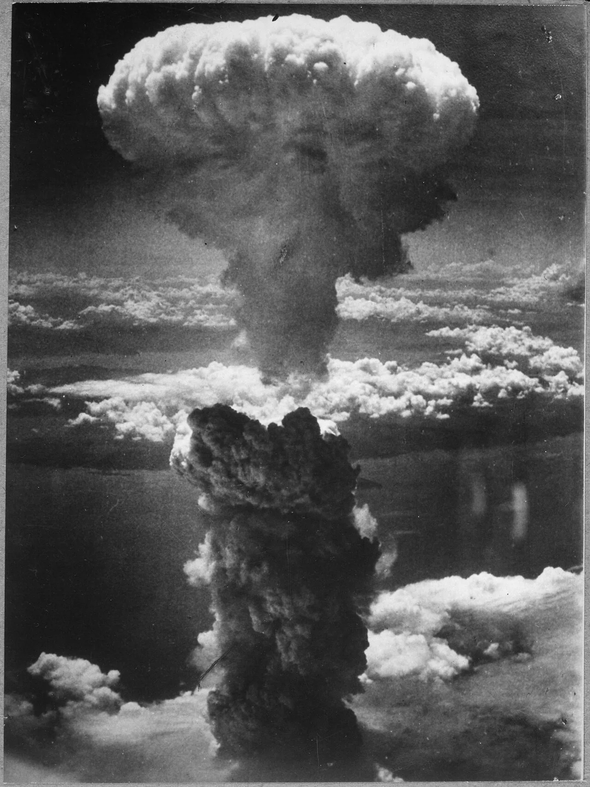
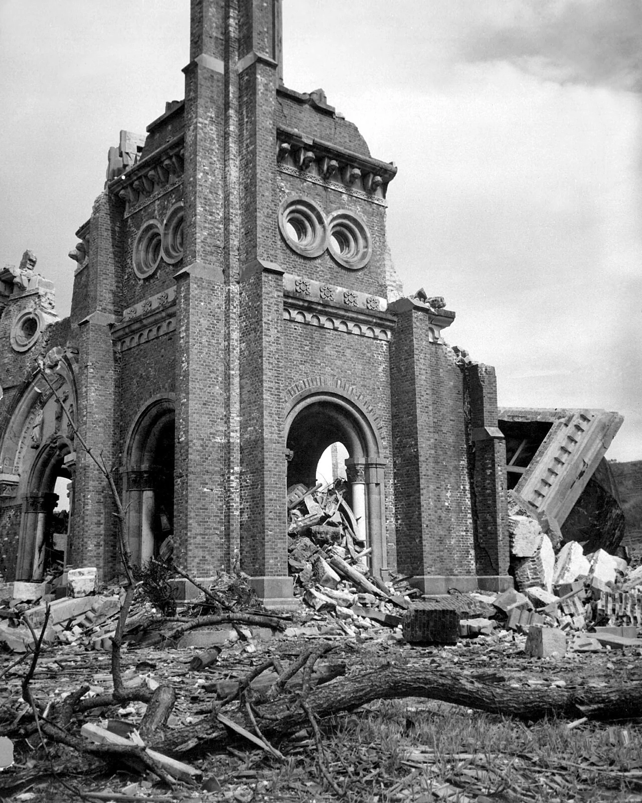
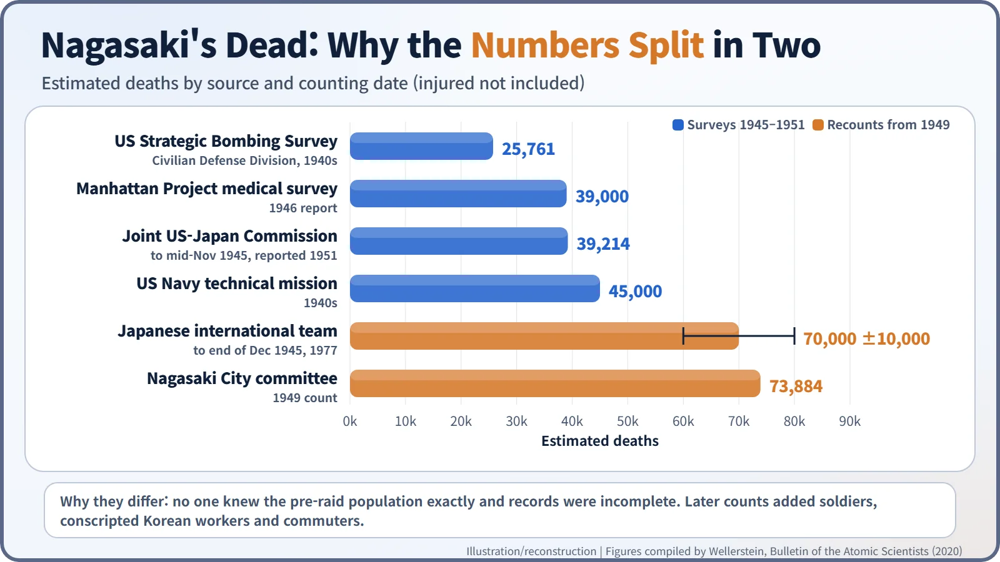
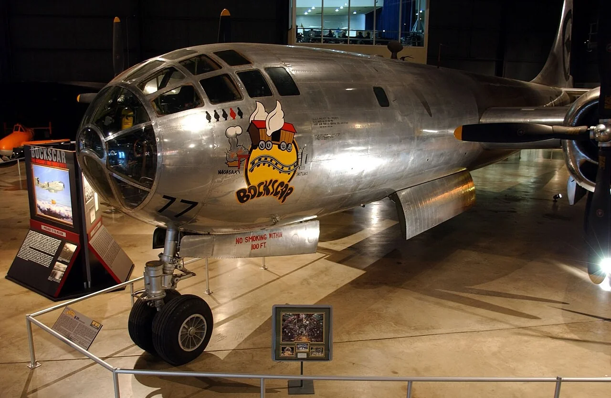

Nuclear History · 120
A Target Changed Through the Clouds — The Atomic Bombing of Nagasaki (9 August 1945)
Smoke hid the primary target, fuel ran low, and a gap in the clouds over Nagasaki decided where the second atomic bomb fell.
On 9 August 1945 the B-29 Bockscar spent about 50 minutes over its primary target, Kokura, but smoke and haze hid the aiming point. Running short of fuel, the crew turned to the secondary target, Nagasaki, and dropped the plutonium bomb "Fat Man" through a gap in the clouds. It exploded at 11:02 a.m. Death estimates range from about 25,000 to more than 70,000, depending on who counted and when.
A city that was not the first choice
On the morning of 9 August 1945, a single American B-29 flew over Kokura, an industrial city at the northern tip of Kyushu, Japan. In about 50 minutes it made three bombing runs and pulled away each time. In the end the bomber turned south-west, and the port city of Nagasaki became the day's target. The city's fate was decided by cloud, smoke and a falling fuel gauge. [1]
Three days later, a second mission
The first atomic bomb hit Hiroshima on 6 August. On 8 August the Soviet Union declared war on Japan. The second atomic mission had been planned for 11 August. Forecasts of bad weather moved it forward to the 9th. An order issued on 25 July had listed four possible targets: Hiroshima, Kokura, Niigata and Nagasaki. The bomb on board this time was "Fat Man", an implosion weapon that used plutonium. [1] [5]
A broken fuel pump starts the trouble
The aircraft commander was Major Charles W. Sweeney (1919–2004), and the plane was the B-29 Bockscar. Its name was a pun: the plane usually belonged to Captain Frederick C. Bock. Bockscar took off from North Field on Tinian at 3:47 a.m. Tinian time (one source gives 3:49).
Things were already going wrong at takeoff. A failed fuel pump meant that about 640 US gallons (about 2,400 litres) in a reserve tank could not be used. Next, the bomber had to wait for its two escort planes over the island of Yakushima. It circled there for close to an hour (another account says about 40 minutes), and the camera plane never arrived. Every minute of waiting used more fuel the crew could not replace. [1] [5]
Fifty minutes over Kokura
The primary aiming point was the Kokura Army Arsenal. Weather planes had reported clear skies. When Bockscar arrived, though, smoke and haze hid the aiming point. Sources disagree about the cause. The reasons given include cloud, smoke from a firebombing raid on nearby Yahata the day before, and coal tar that the Yahata steelworks may have burned on purpose to make a smoke screen. The crew had been told to drop by sight, not by radar. They made three runs in about 50 minutes, and Japanese anti-aircraft fire and fighters began to appear. Radar operator Jacob Beser later said things got "a little hairy". Kokura was dropped. [1]
A stadium through a gap, 11:02 a.m.
The fuel left was only enough to reach Okinawa, so the crew decided on a single pass over the secondary target, Nagasaki. Cloud covered Nagasaki too. Sweeney reluctantly approved a less accurate radar approach. At the last moment the bombardier, Captain Kermit K. Beahan, saw the city's stadium through a gap in the clouds and released the bomb. Beser later explained the thinking: "there was no sense dragging the bomb home or dropping it in the ocean."
The bomb exploded at 11:02 a.m. local time, about 1,650 feet (roughly 500 m) above the ground. Its yield was about 21 kilotons of TNT, roughly 40 percent more than the Hiroshima bomb. It burst nearly 3 km north-west of the planned aiming point, over the Urakami district. That put it between the Mitsubishi steel works and the Mitsubishi torpedo works. Bockscar then made an unannounced emergency landing at Yontan airfield on Okinawa. According to the usual account, one engine stopped on final approach because it had run out of fuel. [1] [5]


What the hills held back, and what they could not
The bomb was more powerful than the Hiroshima weapon, but the area it destroyed was smaller. The blast was largely trapped in the Urakami valley, which is ringed by hills, so the city centre beyond the hills suffered less. The damage was still enormous. According to US Department of Energy history pages, 14,000 of Nagasaki's 52,000 homes were destroyed and 5,400 more were badly damaged. A Nagasaki Prefecture report said that within 1 km of the burst, "men and animals died almost instantly." [1] [3]
Urakami Cathedral stood about 500 m from the hypocentre. Its twin bell towers had been completed in 1925, and it was described as the largest cathedral in East Asia. The blast brought it down. Two priests and a few dozen worshippers inside are believed to have died instantly. [4]

How many died, and why the numbers split in two
Death tolls vary widely with the source and the date of the count. US and joint US-Japanese surveys up to 1951 mostly gave between about 25,000 and 45,000 deaths. In 1949 a Nagasaki City committee counted 73,884. In 1977 a Japanese international team estimated about 70,000 deaths (plus or minus 10,000) by the end of 1945. DOE history pages give about 40,000 initial deaths, nearing 70,000 by January 1946. [1] [2]
The gaps have causes. Nobody knew the city's exact population before the raid, and records were burned or unreliable. The later estimates also added soldiers, conscripted Korean workers and commuters who were not registered residents. Estimates of Korean deaths range from 1,500–2,000 to as many as 10,000, which makes them especially uncertain. At least eight Allied prisoners of war also died. The nuclear historian Alex Wellerstein reviewed these estimates and concluded: "None of them are absurd." [2]
| Source | Counting date | Deaths |
|---|---|---|
| US Strategic Bombing Survey (Civilian Defense Division) | 1940s | 25,761 |
| Manhattan Project medical survey | 1946 report | 39,000 |
| Joint US-Japan Commission | to mid-November 1945 (reported 1951) | 39,214 |
| US Navy technical mission | 1940s | 45,000 |
| Japanese international team | to end of December 1945 (1977) | 70,000 ± 10,000 |
| Nagasaki City committee | 1949 | 73,884 |

What came after
News of the bomb reached Tokyo while Japan's Supreme Council for the Direction of the War was meeting to discuss the terms of surrender. Six days later, on 15 August, the emperor's surrender broadcast was aired. Historians still disagree about whether the second bomb was necessary, and whether the bombs or the Soviet entry into the war mattered most to the surrender. One fact is not in dispute: Nagasaki remains the last place where a nuclear weapon has been used in war.
Today Bockscar is on display at the National Museum of the United States Air Force in Dayton, Ohio. Urakami Cathedral was rebuilt in 1959. On that August morning, a few patches of cloud spared one city and sealed the fate of tens of thousands of people in another. [4] [5]
